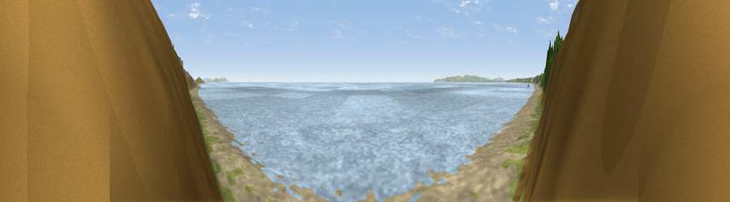

Fisherman's Walk Beach
#37169 in England · top 61% of its area beats it · near WickThe view, rendered

A 360° render of this exact spot computed from the terrain model, tree cover and land cover — summer colours, afternoon light, calibrated against photographs of famous viewpoints. Real trees, hedges and buildings will differ in detail.
The panorama
Grey silhouette: terrain skyline in each direction (720 bearings, Earth curvature and refraction included). Dashed green: skyline with trees (+15 m) and buildings (+8 m) as obstacles. Blue strip: how far the ground is visible on each bearing.
Where the view opens
Wedge length = distance to the farthest visible ground on that bearing (vegetation-aware). Rings at 10, 25 and 50 km.
What fills the view
51% water · 41% grassland · 6% bare ground · 2% woodland ·
Angular shares of the visible panorama (visual magnitude), not map area. Landscape diversity 0.43 (0–1 Shannon).
Key numbers
More beautiful places nearby
The staircase of upgrades: each row has a higher view potential than everything closer. Driving times are estimates from straight-line distance, calibrated against real road routing — check an actual route before setting out.
| Place | Direction | Drive | Score |
|---|---|---|---|
| Viewpoint near Wick | E · 0 km | ~2 min | 46.8 |
| Viewpoint near Bournemouth | W · 3 km | ~8 min | 54.2 |
| Warren Hill | E · 4 km | ~9 min | 60.1 |
| Viewpoint near Studland | SW · 12 km | ~23 min | 62.6 |
| Viewpoint near Studland | SW · 13 km | ~24 min | 80.9 |
| Viewpoint near Studland | SW · 14 km | ~25 min | 82.2 |
| Ballard Down | SW · 14 km | ~26 min | 83.2 |
| Viewpoint near Harman's Cross | SW · 16 km | ~28 min | 84.1 |
50.72067, -1.81733 · source: osm viewpoint · position refined by local search. Computed location — check access rights before visiting.